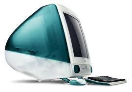
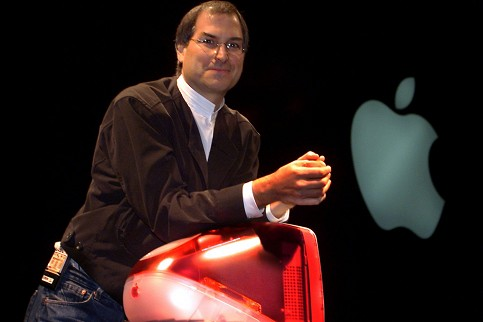
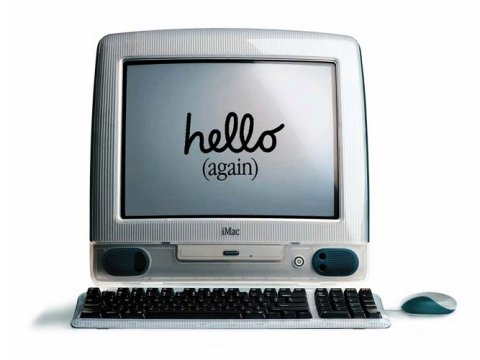
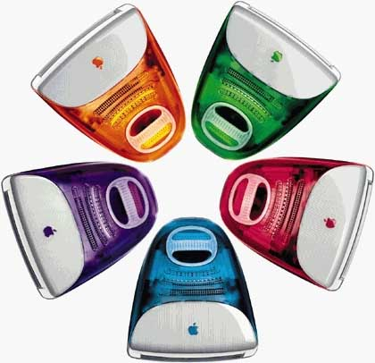

Chương 26

hiến thắng vẻ vang đầu tiên về thiết kế xuất phát từ mối hợp tác Jobs-lve chính là iMac, chiếc máy tính để bàn nhắm vào thị trường khách hàng gia đình, được giới thiệu vào tháng Năm năm 1998. Jobs đưa ra những chỉ dẫn kĩ thuật rõ ràng. Đó phải là một sản phẩm bao-gòm-tất-cả, với bàn phím và màn hình và cả máy tính sẵn sàng để sử dụng ngay khi ra khỏi hộp. Nó phải có thiết kế khác biệt tạo nên được tuyên ngôn sản phẩm. Và nó phải được bán với giá 1.200 đô-la hoặc ngang ngang như vậy. (Vào thời điểm đó Apple chưa có một mẫu máy tính nào bán dưới giá 2.000 đô-la.) “ông ấy bảo chúng tôi quay trở lại với nguyên mẫu của chiếc Macintosh nguyên bản hồi năm 1984, một thiết bị tiêu dùng bao-gồm-tất-cả,” Schiller nhớ lại. “Điều đó có nghĩa là cả thiết kế và kĩ thuật phải đồng bộ với nhau.”
Kế hoạch ban đầu là xây dựng một “máy tính mạng lưới,” một khái niệm có được sự bảo vệ của Larry Ellison của hãng Oracle, đó là một thiết bị đầu cuối đắt tiền với ổ cứng chủ yếu được sử dụng để kết nối Internet và các mạng lưới khác. Nhưng giám đốc tài chính của Apple, Fred Andersen lại dẫn đầu cuộc tấn công nhằm tranh đấu để sản phẩm tiện ích hơn bằng cách bổ sung một ổ đĩa cứng, nhờ vậy iMac có thể trở thành một máy tính để bàn đầy đủ chức năng cho gia đình.
Jobs cuối cùng đã đồng ý.
Jon Rubinstein, người đảm trách phần ổ cứng, đã ứng dụng bộ vi xử lí và những phần tinh túy của chiếc PowerMac G3, chiếc máy tính chuyên nghiệp dòng cao cấp của Apple, phục vụ cho mẫu máy mới đề xuất lên. Nó sẽ có một ổ đĩa cứng và khay dành cho đĩa compact. Nhưng trong một động thái tương đối táo bạo, Jobs và Rubinstein quyết định sẽ không gắn kèm cả ổ đĩa mềm vốn thông dụng. Jobs trích dẫn câu cách ngôn của siêu sao khúc côn cầu Wayne Gretzky, “Hãy trượt đến chỗ trái banh văng tới, chứ không phải chỗ nó đã từng xuất hiện.” Jobs có phần đi quá thời cuộc, nhưng cuối cùng đa phần máy tính đều đã loại bỏ ổ đĩa mềm.
Ive và phó phòng thứ nhất của mình, Danny Coster, bắt đầu phác thảo những thiết kế mang tính vị lai. Jobs cục cằn gạt đi cả tá kiểu mẫu bọt biển mà họ ban đầu đưa ra, nhưng Ive biết cách làm thế nào để nhẹ nhàng dẫn dắt Jobs. Ive tán thành rằng chưa mẫu nào trong số đó thực sự đúng đắn, nhưng anh chỉ ra rằng một mẫu có hứa hẹn. Nó lượn cong, vẻ nghịch ngợm và không có dáng dấp gì kiểu như một phiến cứng không thể dịch chuyển, cắm rễ trên bàn. “Nó mang lại cảm giác là nó vừa mới xuất hiện trên bàn của anh, hay là nó đang sắp sửa nhảy vọt lên và đi đâu đó,” Ive nói với Jobs.
Đến lần trình bày tiếp theo, Ive đã trau chuốt kiểu mẫu vui nhộn đó. Lần này thì Jobs, với thế giới quan nhị nguyên của mình, lại điên cuồng bày tỏ rằng ông ta thích nó. Ông cầm lấy nguyên mẫu thiết kế bọt biển đó và bắt đầu vác nó kè kè đi khắp trụ sở công ty, tự tin trưng nó ra cho các lãnh đạo cao cấp và thành viên ban giám đốc. Trong quảng cáo của mẫu sản phẩm này, Apple hân hoan ca tụng niềm vinh quang của khả năng tư duy khác biệt, thế nhưng tính đến thời điểm bấy giờ, chưa có thứ gì được đề xuất lên thể hiện nhiều sự khác biệt so với những mẫu máy tính trước đó. Cuối cùng thì Jobs cũng đã nắm trong tay thứ gì đó mới mẻ.
Chiếc vỏ máy bằng nhựa mà Ive và Coster đề xuất có màu xanh lục lam, về sau được đặt tên là xanh dương bondi, dựa theo tên của màu nước tại một bãi biển Australia, và nó trong mờ, nhờ vậy bạn có thể nhìn thấu cả bên trong cỗ máy. “Chúng tôi gắng sức chuyển tải cảm giác về một chiếc máy tính có thể biến đổi theo nhu cầu của bạn, như là một con tắc kè hoa vậy,” Ive nói. “Đó là lí do tại sao chúng tôi thích sắc trong mờ. Bạn có thể chọn các màu nhưng nó có vẻ rất bất tĩnh tại. Và nó mang lại ấn tượng thật táo tợn.”

IMac 1998
Thông qua ẩn dụ và cả trên thực tế, sắc trong mờ kết nối nền tảng kĩ thuật bên trong chiếc máy tính với thiết kế bên ngoài. Jobs luôn luôn nhấn mạnh rằng các dãy chip trên các bảng mạch trông phải ngay hàng thẳng lối, mặc dù chẳng bao giờ người ta nhìn thấy chúng. Giờ thì chúng đã lò lộ trước mắt. Lớp vỏ máy sẽ trưng ra được nỗ lực chăm chút được dồn vào việc tạo nên tất cả các phần cấu thành chiếc máy tính và ráp chúng lại với nhau. Mầu thiết kế nghịch ngợm sẽ chuyển tải sự giản đơn, và chính trong lúc đó, lại hé lộ chiều sâu mà sự giản đơn đích thực mang tới.
Nhưng kể cả sự giản đơn của bản thân chiếc vỏ nhựa cũng đòi hỏi tính phức tạp ghê gớm.
Ive và nhóm của mình đã làm việc với các đối tác sản xuất ở Hàn Quốc của Apple để hoàn thiện quy trình chế tạo vỏ máy, và họ thậm chí còn tới thăm một nhà máy sản xuất kẹo dẻo để tìm hiểu xem làm thế nào khiến cho các màu trong mờ trở nên thật là lôi cuốn. Chi phí cho mỗi chiếc vỏ lên tới hơn 60 USD, gấp ba lần giá một vỏ máy tính thông thường. Các công ty khác chắc hẳn sẽ yêu cầu phải có các buổi trình chiếu và các nghiên cứu để chứng minh xem liệu rằng chiếc vỏ máy trong mờ có gia tăng lượng tiêu thụ đủ để cân bằng chi phí phụ trội hay không. Jobs không đòi hỏi thứ phân tích như thế.
Ở đỉnh của mẫu thiết kế này chính là chiếc quai nhấc ẩn phía trong iMac. Nó nghịch ngợm và mang tính kí hiệu nhiều hơn là thuần chức năng. Đây là một chiếc máy tính để bàn; không có mấy người thực sự sẽ vác nó đi chỗ nọ chỗ kia. Nhưng như lời Ive lí giải sau này thì: Hồi đó, người ta không mấy thoải mái với công nghệ. Nếu bạn e sợ thứ gì đó, thì bạn sẽ không đời nào chạm vào nó. Tôi có thể thấy mẹ tôi sợ chạm vào máy tính. Nên tôi nghĩ là, nếu có cái quai nhấc này trên máy, nó sẽ khiến cho mối quan hệ hai bên trở thành khả dĩ. Nó dễ tiếp cận.
Nó hối thúc trực giác hơn. Nó cho phép bạn được chạm vào nó. Nó mang lại cảm giác rằng nó chiều theo ý bạn.
Thật không may, sản xuất một chiếc quai nhấc đục lõm vào sẽ tốn kha khá tiền, ở hãng Apple cũ, thì tôi sẽ thua cuộc tranh luận ngay. Điều thực sự tuyệt vời của Steve là ở chỗ anh ấy trông thấy nó và bảo, “Quá đỉnh!” Tôi không hề giải thích tất cả suy nghĩ của mình, nhưng bằng trực giác của mình, anh ấy đã nắm bắt được. Steve biết rằng nó là một phần của sự thân thiện và vẻ nghịch ngợm của iMac.
Jobs buộc phải gạt đi những chống đối xuất phát từ các kĩ sư sản xuất, được trợ sức bởi Rubinstein, người có xu hướng khơi lên những suy xét về chi phí thực tế khi phải đối mặt với những khát khao thẩm mỹ cùng ngẫu hứng thiết kế đủ loại của Ive. “Khi tôi giới thiệu nó trước các kĩ sư,” Jobs nói, “họ đưa ra tới ba mươi tám lí do cho việc không thể nào thực hiện được. Và tôi bảo luôn, „Không, không, chúng ta sẽ làm cái này.‟ Họ nói, „ô, sao lại thế?‟ Tôi bảo, „Vì tôi mới là CEO, và tôi nghĩ là có thể làm được.‟ Và rồi họ có vẻ miễn cưỡng đi thực hiện nó.” Jobs yêu cầu Lee Clow và Ken Segall và các thành viên khác từ nhóm quảng cáo tập đoàn TBWA đáp chuyến bay đến để xem xét những gì đang được phát triển, ông dẫn họ vào xưởng thiết kế được canh gác và một cách khoa trương kịch tính, hé lộ mẫu thiết kế hình giọt lệ trong mờ của Ive, món đồ có dáng dấp như thứ gì đó trong Gia đình Jetson, một loạt phim hoạt hình trên TV với bối cảnh tương lai. Trong thoáng chốc, tất cả đều sững sờ. “Chúng tôi cực kì choáng, nhưng chúng tôi không thể thành thật được,” Segall nhớ lại. “Thực tình tôi nghĩ là, „Chúa ơi, liệu họ có biết mình đang làm gì không vậy?‟ Nó cực đoan quá mức.” Jobs đề nghị họ đưa ra những cái tên. Segall quay lại với năm phương án, một trong số đó là “iMac.” Thoạt tiên Jobs không hề thích cái nào trong số đó, nên Segall đưa ra một danh sách khác vào một tuần sau đó, nhưng ông nói rằng hãng quảng cáo vẫn thích cái tên “iMac” hơn. Jobs đáp rằng, “Tuần này thì tôi chẳng ghét gì nó, nhưng tôi vẫn không thích nó.” Jobs cố gắng cho thử in lưới cái tên này trên mấy chiếc iMac nguyên mẫu, cái tên dần cuốn hút ông hơn. Và thế là mẫu máy tính mới đã có tên là iMac.
Lúc hạn chót cho việc hoàn thành mẫu iMac tới gần, tính khí nóng nảy vốn đã thành huyền thoại của Jobs tái phát dồn dập, đặc biệt là trong lúc ông phải đối mặt với những vấn đề sản xuất.
Trong một cuộc họp đánh giá sản phẩm, ông biết được rằng quy trình sản xuất đang chậm trễ. “ông ấy trưng ra ngay một trong những biểu hiện giận dữ khủng khiếp, và nỗi tức giận ấy tuyệt đối thành thực,” Ive nhớ lại. ông đi quanh bàn, tấn công túi bụi tất cả mọi người, bắt đầu là Rubinstein. “Các người biết là chúng ta đang cố cứu cả công ty cơ mà,” ông ta thét lên, “và các người đang làm hỏng bét mọi sự!”
Giống như nhóm chế tạo Macintosh nguyên bản, đội iMac cũng đã lảo đảo khốn khổ để hoàn thiện cho kịp với buổi công bố chính thức. Nhưng thế vẫn còn chưa đủ, trước khi Jobs bùng nổ một cơn cuối cùng. Đến lúc tập dượt cho buổi trình chiếu ra mắt, Rubinstein bày tạm hai chiếc máy tính nguyên mẫu. Trước đó Jobs chưa từng trông thấy sản phẩm chung cuộc, và khi ông nhìn vào mẫu máy tính trên sân khấu, ông trông thấy một nút bấm ở phía trước, bên dưới mẫu trưng bày.
ông nhấn vào nó và khay CD mở ra. “Cái của nợ gì đây?!?” Steve hỏi với vẻ không mấy lịch sự.
“Không ai trong số chúng tôi nói năng gì,” Schiller nhớ lại, “vì rõ ràng ông ấy biết cái khay CD như thế nào rồi.” Thế là Jobs tiếp tục mắng nhiếc. Đáng lẽ chiếc máy tính phải có một rãnh CD gọn ghẽ, ông nhấn mạnh, nhắc đến những rãnh đĩa thanh lịch đã có thể tìm thấy ở những dòng ô tô nâng cấp. “Steve, đây chính xác là ổ đĩa mà tôi đã cho anh xem khi chúng ta bàn bạc về các thành phần mà,” Rubinstein phân bua. “Không, không đời nào có cái khay, chỉ là khe thôi,” Jobs vẫn khăng khăng. Rubinstein không chịu lùi bước. Cơn cuồng nộ của Jobs không hề lắng dịu. “Tôi suýt bật khóc, vì đã quá muộn để có thể thay đổi chi tiết đó,” về sau Jobs hồi tưởng.
Họ tạm hoãn buổi tập duyệt, và trong một khoảng thời gian, mọi chuyện có vẻ như là Jobs có thể sẽ hủy bỏ toàn bộ kế hoạch giới thiệu sản phẩm. “Ruby nhìn tôi như thể muốn nói rằng, Tôi có khùng không vậy?” Schiller nhắc lại. “Đây là lần giới thiệu sản phẩm đầu tiên tôi làm cùng Steve và cũng là lần đầu tiên tôi chứng kiến cái tư duy „Nếu chưa đúng thì đừng hòng ra mắt sản phẩm.‟ của Steve.” Cuối cùng, tất cả đồng ý sẽ thay thế khay đĩa bằng một khe đĩa cho phiên bản iMac kế tiếp. “Tôi sẽ chỉ tiếp tục kế hoạch giới thiệu sản phẩm nếu anh hứa là chúng ta sẽ thực hiện kiểu khe đĩa càng nhanh càng tốt,” Jobs nói như chực khóc đến nơi.
Vẫn còn một vấn đề nữa với đoạn băng hình Steve Jobs dự tính sẽ trình chiếu.
Trong đó, Jony Ive được ghi hình đang mô tả tư duy thiết kế của mình và hỏi rằng, “Liệu nhà Jetson đã có trong tay kiểu máy tính thế nào nhỉ? Nó giống như là, tương lai từ ngày hôm qua vậy.” Đúng và khoảnh khắc ấy, sẽ có một đoạn trích dài hai giây từ bộ phim hoạt hình, thể hiện cảnh Jane Jetson nhìn vào một màn hình video, tiếp đến là một đoạn kéo dài hai giây nữa cảnh nhà Jetson đang cười khúc khích bên cây thông Giáng sinh. Trong một buổi tập dượt, một trợ lí sản xuất nói với Jobs rằng họ sẽ phải cắt bỏ các đoạn trích phim vì Hãng phim Hanna- Barbera vẫn chưa cho phép sử dụng chúng. “Cứ để nguyên đấy,” Jobs quát ngay anh ta. Viên trợ lí giải thích rằng có các điều khoản luật chống lại việc này. “Tôi cóc quan tâm,” Jobs nói. “Chúng ta vẫn sẽ sử dụng.” Đoạn phim vẫn được giữ như cũ.
Lee Clow đã chuẩn bị một loạt các mẫu quảng cáo đầy màu sắc trên tạp chí và khi ông gửi cho Jobs các trang in thử, ông phải nhận hồi đáp là một cuộc điện thoại điên cuồng tức giận. Màu xanh dương trong mẫu quảng cáo, Jobs khẳng định, khác với màu xanh của chiếc iMac. “Các người chẳng hề biết các người đang làm gì!” Jobs thét lên. “Tôi sẽ bảo người khác nhận phần quảng cáo, vì mấy thứ này thật khốn kiếp.” Clow cự lại ngay. So sánh hai mẫu mà xem, ông nói.
Jobs, lúc này đang không ở văn phòng, vẫn nằng nặc rằng mình đúng và tiếp tục la hét. Cuối cùng Clow bắt Jobs phải ngồi xuống để xem các bức hình nguyên bản. “Rút cuộc tôi chứng tỏ cho anh ta thấy rằng màu xanh đúng là cái màu xanh như là màu xanh đó.” Nhiều năm về sau, trong một phiên thảo luận về Steve Jobs trên trang web Gawker, câu chuyện sau đây cũng được kể qua lời của một người làm việc tại cửa hàng Whole Foods ở Palo Alto, cách nhà của Jobs vài dãy: “Một chiều nọ tôi đang kéo mấy cái xe hàng thì tôi trông thấy một chiếc Mercedes màu bạc đậu trong khu vực dành cho người tàn tật. Steve Jobs ở trong đang gào thét vào điện thoại trong xe. Đây là ngay trước thời điểm chiếc iMac đầu tiên được công bố và tôi chắc chắn rằng mình nghe lõm bõm được câu này, „Không. Bố khỉ. Xanh lam. Đủ rồi!!!”
Như thường lệ, Jobs luôn có xu hướng bắt buộc phải chuẩn bị một màn hé lộ sản phẩm thật là kịch tính. Đã hủy bỏ một buổi tập dượt vì quá tức giận chuyện khay đĩa CD, Jobs ráng hết sức cho những buổi tập sau đó để đảm bảo rằng hôm công bố sẽ phải tỏa sáng xuất sắc. ông diễn đi diễn lại khoảnh khắc kịch tính đỉnh cao, khi ông sẽ bước ngang sân khấu và tuyên bố, “Hãy chào đón chiếc iMac mới.” ông muốn ánh sáng phải thật hoàn hảo, nhờ vậy sắc trong mờ của cỗ máy mới sẽ sống động hết sức có thể. Nhưng sau vài lượt thử, ông vẫn không hài lòng. Đây là sự lặp lại của nỗi ám ảnh về ánh sáng sân khấu của Steve mà Sculley đã từng chứng kiến tại những buổi tập dượt cho lễ công bố chiếc Macintosh nguyên bản năm 1984. ông yêu cầu đèn rọi phải sáng hơn và xuất hiện sớm hơn, nhưng như vậy Jobs cũng vẫn chưa hài lòng. Vậy nên ông thong thả bước xuống lối đi của khán phòng và ngồi thườn thượt vào một chỗ ở vị trí trung tâm, gác hai chân lên ghế phía trước. “Cứ tiếp tục làm cho đến khi nào đúng thì thôi, nhé?” Họ lại thử thêm lần nữa. “Không, không,” Jobs phàn nàn. “Cái này vẫn không ổn rồi.” Lần tiếp theo, đèn đóm đã lên đủ sáng, nhưng lại chiếu ra quá muộn. “Tôi quá mệt vì cứ phải yêu cầu chuyện này rồi,” Jobs gầm lên. Cuối cùng, chiếc iMac đã sáng bừng đúng như mong đợi. “Ô! Đúng rồi! Tuyệt quá!” Jobs reo lên.
Một năm trước đó Jobs đã loại Mike Markkula, người dẫn dắt và đối tác thuở ban đầu của mình ra khỏi ban giám đốc. Nhưng giờ đây, Jobs quá tự hào về những gì mình đã chế tạo nên với chiếc iMac mới, và sụt sùi cảm động về mối liên hệ giữa mẫu máy tính hậu bối này với vị tiền bối Macintosh, thế là Jobs mời Markkula tới Cupertino để tham dự một buổi duyệt riêng tư. Markkula quá sức ấn tượng. Chi tiết không thích duy nhất của Markkula là con chuột mới mà Ive vừa thiết kế. Trông nó như trái banh khúc côn cầu vậy, Markkula nói, và mọi người sẽ ghét nó cho coi. Jobs không đồng ý, nhưng Markkula đã đúng. Nếu không thì cả cỗ máy mới đã giống như bậc tiền bối của nó, thành công vang dội.
Lễ công bố, ngày 6 tháng Năm, 1998
Với lễ công bố chiếc Macintosh nguyên bản vào năm 1984, Jobs đã sáng tạo nên một thể loại sân khấu mới: lễ ra mắt sản phẩm như một sự kiện đánh dấu bước ngoặt lịch sử, lên đến đỉnh cao bằng một khoảnh khắc trong đó vòm trời tách ra, một luồng sáng rọi xuống, và dàn đồng ca gồm những tín đồ sùng đạo được lựa chọn sẽ hát vang “Hallelujah.” Đối với buổi công bố sản phẩm trọng đại mà Jobs hi vọng rằng sẽ cứu vớt Apple và một lần nữa, biến đổi trải nghiệm máy tính cá nhân, như một hành động mang tính biểu tượng, ông lựa chọn Khán phòng Flint của Trường Cộng đồng De Anza tại Cupertino, chính là địa điểm ông đã sử dụng hòi năm 1984. ông muốn vận dụng khả năng hùng biện để xua tan những ngờ vực, tập hợp lực lượng, tranh thủ sự ủng hộ của cộng đồng các kĩ sư phát triển và thúc đẩy chiến dịch quảng bá sản phẩm mới. Nhưng ông cũng làm như thế còn vì ông muốn tận hưởng cảm giác đóng vai trò ông bầu sự kiện. Dàn xếp một buổi diễn hoành tráng khơi dậy những nỗi đam mê cũng tạo ra cảm xúc như việc đã chế ra một sản phẩm tuyệt hảo vậy.

Thể hiện khía cạnh giàu cảm xúc trong con người mình, Jobs bắt đầu bằng một màn xướng tên duyên dáng và long trọng ba nhân vật mà ông đã mời ngồi ở vị trí khán giả hàng đầu. ông đã xa lánh tất cả bọn họ, nhưng giờ đây ông muốn họ sẽ lại tham gia cùng với mình. “Tôi đã khởi sự doanh nghiệp này cùng Steve Wozniak trong gara ô tô của cha mẹ tôi, và Steve hôm nay có mặt tại đây,” ông nói, chỉ đến chỗ Steve và gợi ra một tràng pháo tay. “Chúng tôi sau đó có thêm Mike Markkula và chẳng bao lâu sau đến lượt chủ tịch đầu tiên, Mike Scott,” ông nói tiếp. “Cả hai người anh em này đều có mặt trong số khán giả hôm nay. Và không ai trong số chúng ta may mắn được hiện diện ở đây nếu thiếu ba con người này.” Đôi mắt ông ngân ngấn trong giây lát lúc tràng pháo tay lại rộ lên. Có mặt trong số khán giả còn có Andy Hertzfeld và hầu hết các thành viên trong nhóm Mac nguyên bản. Jobs nhoẻn một nụ cười với họ. ông tin rằng ông sắp sửa làm cho họ được tự hào.
Sau khi trưng ra đường biểu diễn chiến lược sản phẩm mới của Apple và lướt qua một vài hình chiếu về hoạt động của mẫu máy tính mới, Jobs đã sẵn sàng để công bố đứa con cưng mới nhất của mình. “Máy tính ngày nay trông như thế này,” ông nói trong khi hình ảnh một loạt những cấu kiện hình chiếc hộp màu xám và màn hình được trình chiếu trên màn hình lớn ngay phía sau ông. “Và tôi rất lấy làm vinh hạnh được giới thiệu cho các bạn thấy vóc dáng của máy tính từ nay trở về sau.” ông kéo tấm rèm phủ chiếc bàn trên sân khấu trung tâm để hé lộ chiếc iMac mới, nó lấp lánh và bừng sáng khi ánh đèn chiếu rọi đúng như dự tính, ông nhấp chuột, và cũng giống như ở buổi công bố máy Macintosh nguyên bản, màn hình nháy lên các hình ảnh dồn dập về những điều kì diệu mà chiếc máy có thể thực hiện, ở đoạn cuối, từ “Xin chào” xuất hiện theo một kịch bản nghịch ngợm tương tự đã tô điểm cho chiếc Macintosh năm 1984, lần này có thêm từ “một lần nữa” ở bên dưới, trong dấu ngoặc đơn: Xin chào (một lần nữa). Một tràng pháo tay như sấm động vang rền. Jobs lùi lại và đưa mắt đầy tự hào nhìn chiếc Macintosh mới. “Trông nó cứ như đến từ một hành tinh khác vậy,” ông nói, trong khi khán giả cười rộ lên. “Một hành tinh tốt đẹp.

Một hành tinh với những chuyên gia thiết kế tài giỏi hơn.”
Một lần nữa Jobs đã lại sản xuất ra sản phẩm mới mang tính biểu tượng, chiếc máy tính lần này chính là tiên báo của một thiên niên kỉ mới. Nó hoàn thành lời hứa “Tư duy Khác biệt.” Thay vì những chiếc hộp cùng màn hình màu xám với một mớ hỗn độn các loại dây nhợ cùng cuốn hướng dẫn sử dụng dày cồm cộp, thì đây là một thiết bị thân thiện và hăng hái, êm ái trong từng cú chạm và ưa mắt như là quả trứng của loài hồng hạc vậy. Bạn có thể nắm lấy chiếc quai xách nhỏ nhắn đáng yêu của nó và nhấc ra khỏi chiếc hộp màu trắng thanh lịch, cắm nó thẳng vào chiếc ổ điện trên tường. Những người từng e dè với máy tính giờ đây đều muốn có một chiếc, và họ muốn đặt nó vào một căn phòng nơi những người khác có thể trầm trồ ngưỡng mộ và có lẽ là thèm thuồng lắm lắm. “Một chiếc máy tính pha trộn giữa ánh sáng lung linh khoa học viễn tưởng với vẻ cầu kì hào nhoáng của một chiếc ô gài trên li cocktail,” Steven Levy viết trên tờ Newsweek, “nó không chỉ là chiếc máy tính có vẻ ngoài sành điệu nhất được giới thiệu trong mấy năm nay, mà là một lời tuyên bố chắc nịch rằng tập đoàn trong mơ xuất thân từ Thung lũng Silicon không còn là một kẻ mộng du vô định nữa.” Còn tờ Forbes thì gọi nó là “một thành công làm thay đổi cả ngành công nghiệp”, và John Sculley về sau đã bước ra khỏi cảnh lánh xa nhân thế để bày tỏ dạt dào, “Jobs đã thực hiện một chiến lược giản đơn tương tự đã khiến cho Apple thành công rực rỡ vào 15 năm về trước: tạo ra những sản phẩm đỉnh cao và quảng bá chúng với kế hoạch tiếp thị tuyệt hảo.” Những lời chỉ trích chỉ được nghe thấy từ một góc quen thuộc. Trong khi iMac gặt hái tiếng tăm vang dội, Bill Gates trấn an mọi người trong một buổi họp mặt các nhà phân tích tài chính viếng thăm Microsoft rằng đây chỉ là một thứ mốt nhất thời. “Thứ mà hãng Apple cung cấp lúc này đây chỉ là sự dẫn dắt về màu sắc mà thôi,” Gates nói trong khi chỉ vào một chiếc máy tính để bàn chạy trên hệ điều hành Windows mà ông ta đã sơn màu đỏ với vẻ châm biếm. “Chúng ta sẽ chẳng mất bao lâu để bắt kịp nó thôi, tôi nghĩ vậy.” Jobs nổi cơn tam bành, ông bảo với một phóng viên rằng Gates, người mà ông đã từng công khai chỉ trích vì hoàn toàn không có chút gu thẩm mỹ nào, tuyệt đối không hề hay biết điều gì đã khiến iMac lôi cuốn hơn rất nhiều so với các máy tính khác. “Điều mà các đối thủ của chúng tôi còn bỏ sót, ấy chính là họ nghĩ rằng đây chỉ là chuyện thời trang phù phiếm, và họ nghĩ rằng nó chỉ là thứ mẽ ngoài màu mè,” ông nói. “Họ bảo là, chỉ cần phết tí màu mè lên cái máy tính xấu xí vứt đi này, thế là chúng ta sẽ có một cái y hệt thế thôi mà.”
iMac bắt đầu được bán ra vào tháng Tám năm 1998 với giá 1.299 USD. Nó tiêu thụ được 278 nghìn máy trong vòng sáu tuần đầu tiên, và tính đến cuối năm là 800 nghìn máy, đưa iMac trở thành mẫu máy tính tiêu thụ nhanh nhất trong lịch sử hãng Apple. Đáng chú ý nhất, 32% lượng tiêu thụ đến từ những người lần đầu tiên mua máy tính, còn 12% khách hàng khác thì đã sử dụng các máy tính của Windows.
Ive nhanh chóng đưa ra bốn loại sắc màu trái cây mới, để bổ sung vào màu xanh lam bondi cho các máy iMac. Đưa ra tới năm loại sắc màu cho cùng một mẫu máy tính hẳn nhiên sẽ gây ra những thách thức ghê gớm về sản xuất, kiểm kê và phân phối, ở hầu hết các công ty, thậm chí kể cả hãng Apple xưa cũ, sẽ phải có các dự án nghiên cứu và các cuộc họp để xem xét chi phí và lợi nhuận. Nhưng khi Jobs nhìn vào các sắc màu mới mẻ này, ông hoàn toàn bị mê hoặc và triệu tập các giám đốc khác đến xưởng thiết kế. “Chúng ta sẽ sản xuất tất cả các loại màu!” Ông hớn hở nói với họ. Khi họ rời đi, Ive nhìn vào nhóm của mình đầy kinh ngạc.

“ở hầu hết các nơi, một quyết định như vậy sẽ phải mất hàng tháng trời,” Ive nhớ lại. “Steve chỉ đưa ra trong vòng nửa tiếng đồng hồ.”
Có một cải tiến quan trọng khác mà Jobs muốn có ở iMac: loại bỏ chiếc khay CD khô khan kia. “Tôi trông thấy một ổ đĩa có khe gài trên một dàn chơi nhạc cao cấp của Sony,” ông nói, “nên tôi đến các nơi sản xuất ổ đĩa và yêu cầu họ chế ra một ổ đĩa có khe gài để chúng tôi đưa vào phiên bản iMac mà Apple thực hiện chín tháng sau đó.” Rubinstein cố gắng tranh luận với Jobs về thay đổi này. ông dự đoán rằng các ổ đĩa mới sắp xuất hiện sẽ có chức năng ghi các tệp âm nhạc vào đĩa CD chứ không chỉ thuần chức năng chơi nhạc, và chúng sẽ ra thị trường ở dạng khay trước khi xuất hiện với phiên bản khe cắm. “Nếu anh chọn khe cắm, anh sẽ luôn luôn bị tụt hậu về công nghệ,” Rubinstein phản bác.
“Tôi không quan tâm, đấy là thứ tôi muốn,” Jobs độp lại. Hai người dùng bữa trưa tại một nhà hàng sushi ở San Francisco và Jobs nằng nặc đòi bọn họ phải tiếp tục trò chuyện lúc đi dạo.
“Tôi muốn anh chế ra cái ổ đĩa dạng khe cắm cho tôi như một đề nghị cá nhân,” Jobs nói.
Rubinstein đồng ý, hẳn nhiên là thế, nhưng cuối cùng ông đã đúng. Panasonic đưa ra thị trường ổ đĩa CD có khả năng sao chép và ghi tệp âm nhạc, và nó tương thích trước nhất với những máy tính có các khay đĩa kiểu truyền thống. Tác động của việc này vẫn còn lan tỏa cả vài năm sau đó: Nó khiến cho Apple chậm trễ trong việc phục vụ những khách hàng muốn sao chép và ghi nhạc cho riêng mình, nhưng rồi nó lại thúc ép Apple phải phát huy tối đa óc tưởng tượng và táo bạo hơn để kiếm tìm con đường nhảy cóc qua các đối thủ của mình khi Jobs cuối cùng đã nhận ra rằng ông phải bước vào thị trường âm nhạc.